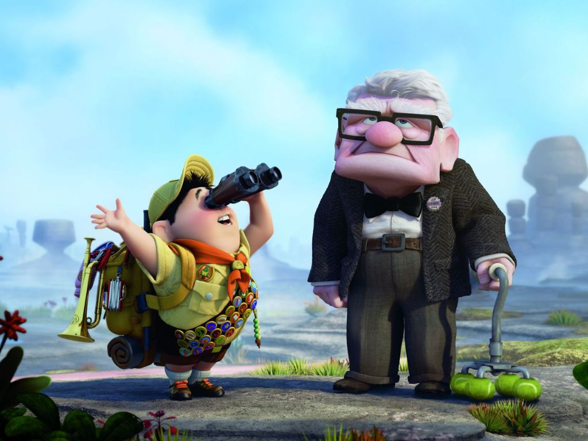
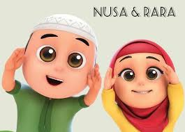

FILM KARTUN KELUARGA TERBAIK
UP

UP adalah film petualangan komedi-drama animasi, demi memenuhi
janji pada almarhum istrinya.Carl pun menerbangkan rumahnya
dengan balon warna-warni ke paradise falls.tapi tak sadar,
ia membawa seorang anak 'penumpang gelap' bocah 8 tahun.
NUSA DAN RARA

Animasi bernuansa islami dan spesifik memberikan aducation.
Mengisahkan seorang anak laki-laki yang bernama nusa mejadi
karakter kaka dan rara sebagai adik perempuanya.
INSIDE OUT

filem out yang menceritakan berbagai gejolak emosi yang dirasakan
oleh riley, si tokoh utama ketika memasuki usia remaja.